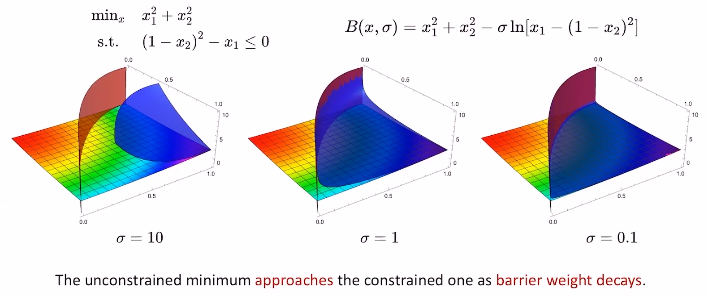

问题形式
- 原问题（一般只能考虑不等式约束）：\(min_{x}f(x)\)，\(s.t.c_{i}(x)\leq 0,i\in I\)
- 障碍函数形式
- logarithmic barrier
- $$B_{ln}(x,\sigma)=f(x)-\sigma\sum_{i\in I}(-c_{i}(x))$$
- inverse barrier
- $$B_{inv}(x,\sigma)=f(x)+\sigma\sum_{i\ I}inv(-c_{i}(x))$$
- $$inv(x):=1/x,if(x>0)$$
- exponential barrier
- $$B_{expi}(x,\sigma)=f(x)+\sigma\sum_{i\ I}expi(-c_{i}(x))$$
- $$expi(x):=e^{1/x},if(x<0)$$
- logarithmic barrier
- 几何解释

Barrier Methods与Penalty Methods的对比
- Penalty Methods当\(\sigma\to\infty\)时，得到的解接近于原问题的解
- Barrier Methods当\(\sigma\to0\)时，得到的解接近于原问题的解
- Penalty Methods是从约束外部逐渐收敛到约束边缘；Barrier Methods是用约束内部逐渐收敛到约束边缘；如果变量有实际的物理意义（在约束外依然有明确的定义）两种方法都可以用，否则只能用Barrier Methods
- 如果使用Sequential Barrier Methods，且每一轮迭代调用的是Newton Method，就是所谓的内点法（Primal Interior Point Method），因为该方法每一轮迭代求得的解严格在约束范围内
Barrier Methods与Penalty Methods的缺陷
- 当两者的解越来越贴近原问题解的同时，对应的无约束的函数的Hessian矩阵也越来越病态（条件数趋于无穷大，Hessian的最大奇异值没有上界），这将导致收敛速度非常慢（梯度下降法会发生震荡）
- sequential方法通过逐渐放大（缩小）\(\sigma\)并用上一轮的解作为下一轮的初值可以一定程度缓解这个震荡的现象，但治标不治本